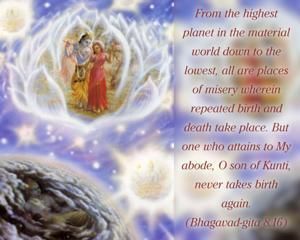
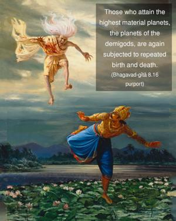
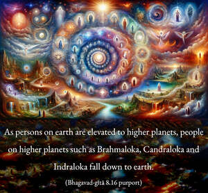

From the highest planet in the material world down to the lowest, all are places of misery wherein repeated birth and death take place. But one who attains to My abode, O son of Kuntī, never takes birth again.



All kinds of yogīs – karma, jñāna, haṭha, etc. – eventually have to attain devotional perfection in bhakti-yoga, or Kṛṣṇa consciousness, before they can go to Kṛṣṇa’s transcendental abode and never return. Those who attain the highest material planets, the planets of the demigods, are again subjected to repeated birth and death. As persons on earth are elevated to higher planets, people on higher planets such as Brahmaloka, Candraloka and Indraloka fall down to earth. The practice of sacrifice called pañcāgni-vidyā, recommended in the Chāndogya Upaniṣad, enables one to achieve Brahmaloka, but if, on Brahmaloka, one does not cultivate Kṛṣṇa consciousness, then he must return to earth. Those who progress in Kṛṣṇa consciousness on the higher planets are gradually elevated to higher and higher planets and at the time of universal devastation are transferred to the eternal spiritual kingdom. Baladeva Vidyābhūṣaṇa, in his commentary on Bhagavad-gītā, quotes this verse:
brahmaṇā saha te sarve
samprāpte pratisañcare
parasyānte kṛtātmānaḥ
praviśanti paraṁ padam
“When there is devastation of this material universe, Brahmā and his devotees, who are constantly engaged in Kṛṣṇa consciousness, are all transferred to the spiritual universe and to specific spiritual planets according to their desires.”